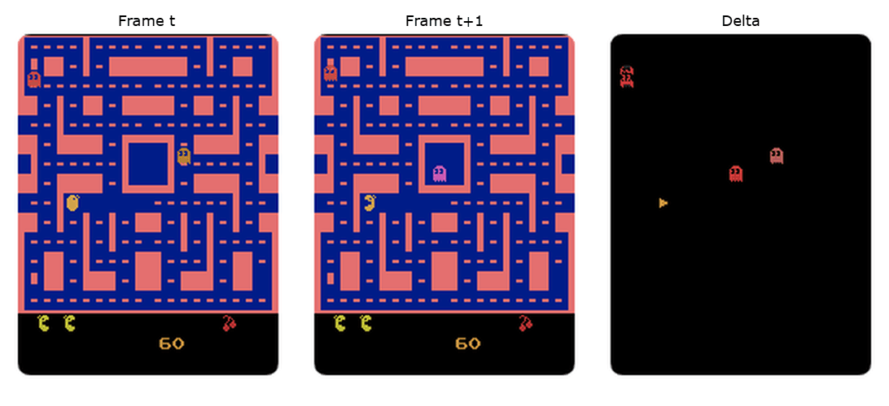
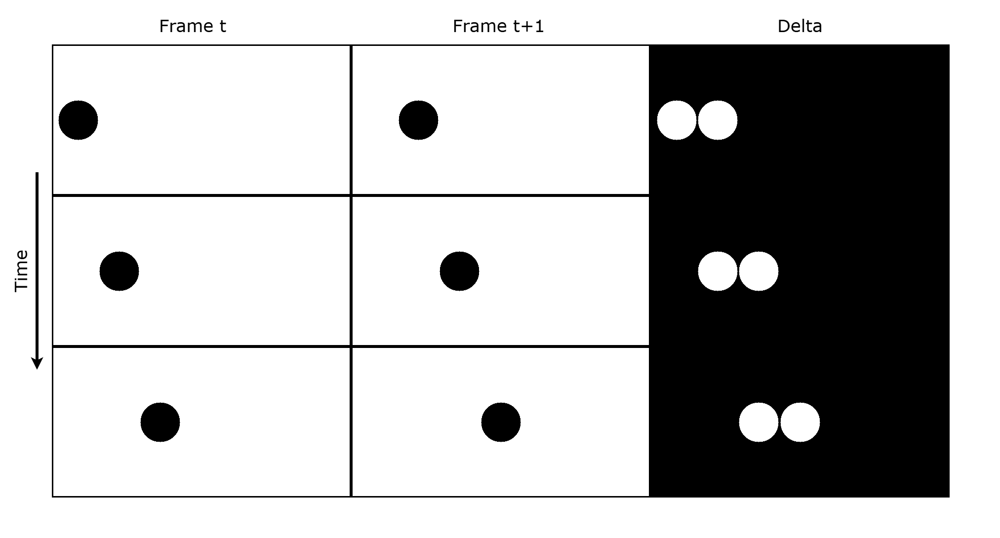

Intelligence and Compression
Jul 03 2026
A few months ago I sat down to learn about basic video compression to better store files in a project of mine, and whilst I understood basic compression before, I never really thought too much about it and how it links to intelligence. My ultimate goal is to understand intelligence, thus it makes sense to write down these basic principles to lay out my understanding.
Delta Compression
Lets start with the problem. You have a video stream that you would like to store, and since we're not allowing ourselves the luxury of using video codecs we start by storing the raw video frames to disk. However, this is super inefficient, we can start optimising this by thinking about the data being stored. Since a video is just an sequence of images, and typically videos do not change much between frames, we are storing a lot of duplicate data.
Here we can use delta compression, to do this we keep the original first frame (F1), called the I-frame/keyframe, then instead of storing the entire next frame (F2), we simply store the delta between the first and second frame.
$$ \Delta_2 = F_1 - F_2 $$Since there is usually a lot of overlapping data between frames, the delta takes up much less data than the original frame. We can then store the third frame using the delta between F2 and F3, and so on. To decode the frames we simply apply that frame's delta to the previous frame:
$$ F_2 = F_1 - \Delta_2 $$ $$ F_3 = F_2 - \Delta_3 $$ $$ ... $$We can see how much redundant information is in the below example of two frames of the Atari game Ms-Pacman. Whilst this is a basic example, and a lot of real-world video will have a much larger delta, we can see that most of the image is static between both frames (some of it never changing during the entire game).

Compression and Predictions
So okay, this is neat and all but what does this have to do with intelligence? Well at the moment nothing, but let's now think about how to go further with this technique. For the above example this simple algorithm is great (we can do even better by compressing individual keyframes and delta's) - but for more complex videos this will only get us so far, can we do better?
We're currently operating on information we have available to us, we know by looking ahead at the next frame that most of the information is the same as the previous frame, but that does not help us with the parts of the image that do change. To think more about this lets take the following example:

Above are frames of a video showing a ball moving to the right of the screen. Whilst there is a lot of redundant information here (remember this is a small example) we still have a fair bit of delta information between each frame. However, look at the ball moving, you can probably say with confidence where the ball will end up in the next frame, perhaps we can use that information?
Enter motion estimation, instead of computing the delta between frame F1 and F2, what if instead we use a prediction model to predict F2 using F1 (or indeed multiple preceding frames), call this F̂2. Then we compute the delta between F2 and F̂2.
$$ \hat{F}_2 = f(F_1) $$ $$ \Delta_2 = F_2 - \hat{F}_2 $$We then store the delta of our predicted frame to the actual frame. To decode we take our keyframe, run it through the same prediction function, and apply our stored delta to give us our original frame back:
$$ F_2 = \hat{F}_2 + \Delta_2 $$Now assume our predictor is able to perfectly predict what F2 will look like based on previous frames, the delta between F2 and F̂2 will be zero, thus we store no further information! Of course we have to address the fact that the predictor takes up storage space, so for this to be effective the space saved using a motion prediction model needs to be more than the storage space of the prediction model. This is usually negated by the fact that the same algorithm can compress thousands of videos, whilst only having one copy of the prediction model.
Note: Video codecs don't explicitly predict the motion of objects in a video, instead it uses block matching to find spatial displacements across frames, this is just a high-level example to demonstrate the point.
Okay, so in order to produce better compression with smaller delta's we need to be able to better predict video frames with higher accuracy. The better the predictions, the smaller the delta, and the less information we need to store. Thus we've reached the heart of this intertwined relationship between intelligence and compression. Imagine an intelligent system that can look at a single frame and predict the rest of the video perfectly, all we would need is a single keyframe and this prediction model, and we wouldn't have to store any more data!
Now of course this is not possible for stochastic video, anything can happen between two frames thus it's impossible to make perfect predictions. However, to build better compression algorithms is to build better predictors of data, and to be able to make predictions is a core element to intelligence (for reasons too complex to go into in this post). A really good compression algorithm basically needs a world model about the data, whether its the motion, lighting, etc of pixels or the relationships and frequencies of words/characters in text (hence why we can build language models using gzip). It is quite a beautiful concept.
Lossy Compression
As mentioned earlier, we cannot perfectly predict the future since there are almost always multiple possibilities and we need to pick the correct one. But this is only important for lossless compression, what if we're okay with lossy compression? If instead of taking a live picture of the ocean and seeing the waves wash over the sand, what if we just took a single image, and used an AI to generate a small clip of what could have happened next? Sure its not what actually happened but does it really matter for that image?
LLMs are basically just a big lossy compression of the internet. Did you really need to compress the text of that exact recipe word for word? or did you just need the general idea of the recipe? What about a bedtime story for your child? a rough summary of text? Instead of compressing all the internet's information (a few TB of storage) to later be retried and decompressed, what about just lossy compression over all this information inside an LLM? Clearly for many tasks this is sufficient.